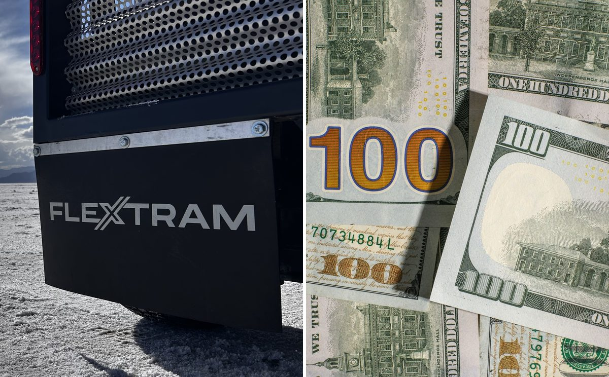

The 2026 tax window for venue transportation equipment. What Section 179 and bonus depreciation mean for your capital budget.
For tax year 2026, a business can expense up to $2,560,000 of qualifying equipment under Section 179, and 100% bonus depreciation is back for good. If you have rented the same guest circulation equipment for years, the ownership math just changed.
For tax years beginning in 2026, a business can deduct up to $2,560,000 of qualifying equipment in the year the equipment is placed in service. (IRS Rev. Proc. 2025-32) Anything above that line can be written off at 100% through bonus depreciation, with no dollar cap. For a calendar-year business, the equipment has to be placed in service by December 31, 2026, to count for 2026. A fiscal-year business has until the end of its own tax year.
That is a different set of rules than most venue operators were budgeting against two years ago. Under the old schedule, bonus depreciation was on its way to zero. The One Big Beautiful Bill Act, signed July 4, 2025, reversed that. It made 100% first-year bonus depreciation permanent for property acquired after January 19, 2025 (IRS, January 2026), and raised the base Section 179 limit from $1,000,000 to $2,500,000 starting with 2025 tax years. Before the change, inflation adjustments had put the 2025 limit at $1,250,000. (26 U.S.C. §179; Rev. Proc. 2024-40)
If your venue, promoter group, parking operation, or raceway has been renting guest circulation equipment season after season, the math on owning it just changed. This article explains how, what qualifies, and where the fine print lives.
One clarification up front: these rules are permanent, so nothing expires in 2026. The deadline that matters is the end of your tax year. Equipment in service by then is deducted this year. Equipment in service after it is deducted next year.
This is general information, not tax advice. The numbers below come from IRS documents and the tax code, but every venue's situation is different. Confirm the specifics with your CPA before you buy anything.
Why the inside mile usually lives in the operating budget
Most venues treat on-site transportation the way they treat portable restrooms: a line item that shows up on the event P&L, gets paid, and disappears. Rental fees are an ordinary operating expense. They are fully deductible, they need no capital approval, and short-term rentals generally stay off the balance sheet.
That is a reasonable way to run a season. It is also why the same venues end up renting the same equipment for the fourth, fifth, and sixth year in a row without ever running the ownership comparison.
The comparison is worth running now because the tax treatment of the two paths has converged. Under the 2026 rules, a purchase can be deducted in year one as completely as a rental fee. The difference is that the venue owns the asset when the year is over.
What Section 179 actually does in 2026
Section 179 lets a business elect to expense the full cost of qualifying equipment in the year it is placed in service, instead of depreciating it over its useful life. The 2026 numbers:
- Maximum deduction: $2,560,000 for tax years beginning in 2026. (Rev. Proc. 2025-32; IRS Publication 946)
- Phase-out threshold: once the cost of Section 179 property placed in service during the year exceeds $4,090,000, the limit shrinks dollar for dollar.
- Qualifying property: tangible equipment, machinery, and vehicles bought from an unrelated party and used more than 50% in the active conduct of a trade or business.
- Claimed on: IRS Form 4562.
Two features matter for a venue. First, Section 179 is elected item by item, so an operator can choose which purchases to expense and which to depreciate normally. Second, it is limited by business income. Section 179 cannot be used to create a loss, so a venue that had a thin year cannot use it to push taxable income below zero. The unused amount carries forward to later years. (26 U.S.C. §179(b)(3))
That second limit is where bonus depreciation comes in.
What 100% bonus depreciation adds
Bonus depreciation under Section 168(k) was phasing down by 20 percentage points a year: 40% for 2025, 20% for 2026, then gone. (IRS Notice 2026-11) The new law repealed the phase-down and made 100% permanent for eligible property acquired after January 19, 2025.
The practical differences from Section 179:
- No dollar cap. Purchases above the Section 179 limit can still be expensed in full.
- No business-income limit. Bonus depreciation can create or deepen a net operating loss, which carries forward to future years. (Harness)
- Applied after Section 179. The IRS describes it as a deduction taken after any Section 179 deduction and before regular depreciation. (Publication 946)
- Used equipment can qualify, as long as the buyer never had a depreciable interest in it before and did not acquire it from a related party. (26 U.S.C. §168(k))
In practice, your CPA picks the mix. When business income is ample, either provision can expense a fleet. When income is thin, 100% bonus depreciation alone usually does the work, because it is not limited by income.
The illustrative math
An honest note first. Before the new law, a profitable venue could already have expensed a $400,000 purchase through Section 179, because the limit was already more than $1.2 million. The new law changes the most in two places: fleets that cost more than that, and venues coming off a thin year, where Section 179's income limit stops the deduction short.
Take that second case. A hypothetical venue operator has $150,000 of taxable business income in 2026, before any depreciation on new equipment, and places $400,000 of guest circulation equipment in service before year-end.
| If the old phase-down still applied | Current law | |
|---|---|---|
| How it is deducted | Section 179 (limited by income), plus 20% bonus and regular depreciation on the rest | 100% bonus depreciation on the full cost; Section 179 not needed |
| Year-one deduction | About $150,000 (taxable income brought to about zero) | $400,000 |
| Net operating loss carried forward | $0 | $250,000 |
| Left to depreciate over later years | About $250,000 | $0 |
Why the old column stops near $150,000: Section 179's income test counts bonus and regular depreciation on the rest of the purchase, so once those deductions are taken there is little income left for Section 179 to use. (Treas. Reg. §1.179-2(c)) Under current law, 100% bonus deducts the whole $400,000, and the $250,000 that exceeds this year's income becomes a net operating loss that carries forward and offsets future taxable income, up to 80% of it in any year. (26 U.S.C. §172) Over the life of the equipment the total deduction is the same either way. What changes is timing: for a C corporation at the 21% federal rate, every $100,000 deducted sooner moves about $21,000 of federal tax savings from later years into this one, or into the years the loss is used. For pass-through entities (LLCs, S corporations, and partnerships, which describe most regional promoters and private venue operators), the deduction flows to the owners, and its value depends on their own income and on basis, at-risk, passive-activity, and excess-business-loss limits.
The point is not the specific figure. It is that a purchase that once had to be justified across a five- or seven-year depreciation schedule can now be justified against a single tax year.
Where the fine print lives
A tax article that hides its caveats isn't worth much, so here they are.
"Placed in service" is the deadline, not "ordered." The IRS says property is placed in service when it is ready and available for a specific use. In practice that means delivered, assembled, tested, and ready to run. (Publication 946) For a calendar-year business, equipment has to be ready by December 31, 2026, to land in the 2026 tax year. A purchase order signed in December for delivery in February does not count. This is the most important timing detail for a fourth-quarter buy, and it is why equipment that deploys in hours rather than weeks matters here.
The acquisition date matters too. Property acquired under a binding written contract entered into on or before January 19, 2025, stays under the old phase-down rules even if it is placed in service later. (IRS Notice 2026-11) This mostly affects long-lead construction, not equipment, but it is worth knowing.
Your state may not follow. Conformity varies widely. California, for example, has not adopted federal bonus depreciation and caps its own Section 179 deduction at $25,000 for individuals and pass-through entities, with a $200,000 phase-out threshold. (California FTB, Form 3885A instructions) An operator in a non-conforming state gets the federal benefit but should expect a difference on the state return.
Tax-exempt venues don't benefit directly. Municipal stadiums, public universities, and nonprofit event organizations generally don't pay federal income tax, so a deduction has no value to them. They also tend to run July-to-June fiscal years, which puts December in the middle of a budget with no capital left in it. The provisions matter to the taxable, calendar-year businesses around them: the promoter leasing the building, the parking operator running the lots, the concessionaire, or the private management company. In many venues, that is exactly where the transportation budget already sits. One catch: if the equipment is leased to, or effectively used by, a government or tax-exempt venue, Section 179 and bonus depreciation may not be available at all. (26 U.S.C. §179(d)(1); §50(b); §168(g)) Have your CPA review the contract before you count on the deduction.
Vehicles carry extra rules. Property used as a means of transportation is generally "listed property" (exceptions exist, including for some large passenger vehicles), which must be used more than 50% for business to qualify for Section 179 or bonus depreciation, and use should be documented. (26 U.S.C. §280F) The caps written for passenger cars and SUVs generally don't fit a 27-passenger tram; the Section 179 SUV limit, for example, excludes vehicles designed to seat more than nine people behind the driver. Have your CPA confirm how your equipment is classified.
Recapture applies. If business use drops to 50% or less in a later year, part of the Section 179 deduction (and, for listed property, part of the bonus depreciation) is recaptured as ordinary income. Depreciation is also generally recaptured as ordinary income if the equipment is later sold at a gain. (Publication 946) That is a reason to buy equipment you intend to run for years, not a reason to avoid buying.
Weighing a purchase before December 31?
FlexTram sells to approved organizations. Submit a short purchase inquiry and Joseph will review it within one business day: fleet scope, a delivery date that lands before year-end, and a payment structure around your cash calendar. Bring your CPA into the conversation.
Consider your buying cycle
Most industries buy equipment in the fourth quarter because the tax year is closing. Live events are one of the few where the capital cycle already lands there on its own.
The season ends when the tax year ends. The college football regular season wraps in late November. NASCAR's Cup Series season ends in early November. The major festival season runs spring through early fall, so by late October most post-mortems are done. October through December is when an operator has the season's revenue in hand, the operational gaps still fresh, and nothing on the calendar. That is when fleet decisions get made anyway. The tax code happens to reward the same window.
"Placed in service" does not mean "used." The test is whether the equipment is ready and available for its intended use, not whether it has carried a passenger. A raceway can take delivery in December, deduct the full purchase in 2026, and run it for the first time at a February race. A festival promoter can do the same and not deploy until April. The off-season is not a reason to wait. It is the reason the timing works.
The cash benefit arrives around the season start. Buy in the fourth quarter of 2026 and deduct on the 2026 return. The benefit shows up as lower estimated payments, a lower balance due when the return is filed in spring 2027, or, if the deduction creates a loss, lower taxes in the years that follow. That is when a venue is hiring drivers and absorbing pre-season costs.
The deduction follows delivery, not payment. The IRS treats you as owning property even if it is subject to a debt. (Publication 946) A venue can take delivery in December, expense the full purchase in 2026, and pay for it across 2027. In year one, the deduction can be larger than the cash out the door.
That last point is where FlexTram can meet a venue's calendar instead of asking the venue to meet ours. Depending on how an operator's cash moves, a purchase can be structured as:
- Delivery in the fourth quarter, first payment at season start. The tax benefit and the first payment land in the same months.
- Installments timed to your own revenue events, built around the dates the venue actually gets paid rather than a vendor's billing cycle.
- A financed purchase. We can help arrange financing for operators who want the asset without the cash outlay. One structural note: a true operating lease does not carry the deduction, because the lessor owns the equipment and takes it. The agreement has to be a purchase, or a lease-to-own that your CPA confirms is treated as one, before you sign.
- Prepayment for operators coming off a strong year who want the cash deployed in 2026, with pricing that reflects it.
- Rental credit: a portion of 2026 rental fees credited against the purchase price, which turns a line item already spent into equity in the equipment. Your CPA will determine how the credit affects the equipment's basis and the rent already deducted.
None of these structures can move the placed-in-service date. The contract has to be a binding purchase, and the equipment has to be delivered and ready by the end of your tax year (December 31 for a calendar-year business). An invoice dated December for equipment arriving in February does not qualify, and neither does an agreement in principle with the paperwork to follow in January.
Why ownership changes the operation, not just the tax return
The tax rules make the purchase cheaper. They do not make it work.
Venues that rent circulation equipment event to event tend to run it as a service someone else manages: the vendor shows up, runs routes, and leaves. Venues that own equipment have to run it themselves, including routes, schedules, drivers, maintenance, ADA coverage, and storage between events.
That is the real transition, and it is the part most equipment vendors leave the buyer to figure out alone. FlexTram built its operating model around it. Every engagement moves through three stages: Specify the circulation plan from ingress and egress modeling and heat maps, Operate it as a managed service, and Transition it to the venue's own team when ownership makes sense. Equipment purchase is the on-ramp to that third stage, not a handoff at the loading dock. (We described the rental and full-service paths in "You're Two Weeks Away from a Mass Transit System.")
At one Southern California site, eight FlexTrams replaced 300 golf carts, not because the vehicles were bigger but because the operations plan behind them was. A venue buying equipment in the fourth quarter of 2026 should be buying that plan with it. Otherwise it owns 27-passenger vehicles and a parking lot full of questions.
What a fourth-quarter 2026 purchase looks like
For a venue weighing this before year-end, the sequence is short:
- Confirm entity type and taxable income with your CPA. This decides whether Section 179, bonus depreciation, or both do the work, and whether your state follows.
- Scope the circulation requirement. Fixed routes, peak throughput, ADA coverage, and storage. This is the Specify stage, and it sizes the fleet.
- Lock a delivery date that lands before your tax year ends. Placed in service is the test. Get it in writing.
- Choose the payment structure that matches your cash calendar. Deferred first payment, season-timed installments, financing, or prepayment. Each can support a 2026 deduction, as long as it is a purchase and the equipment is in service by year-end.
- Decide what you are running yourself in year one. A transition plan with a defined handoff date is cheaper than learning it live at your first event.
FlexTram has deployed at some of the largest events and facilities in the United States, and now sells the same equipment it has been operating since 2021 to approved organizations, along with the operating plan that makes it work. If your venue has been renting the inside mile for years, the tax code no longer penalizes you for owning it.
The long depreciation schedule is optional now. The question left is whether you want to keep paying for a system you don't own.
— The FlexTram Team
Nothing in this article is tax, legal, or accounting advice. Consult a qualified professional about your specific situation.
Frequently asked questions
What is the Section 179 limit for 2026?
For tax years beginning in 2026, the maximum Section 179 deduction is $2,560,000. It begins to phase out dollar for dollar once total qualifying property placed in service during the year exceeds $4,090,000. Those figures come from IRS Rev. Proc. 2025-32. The One Big Beautiful Bill Act set the base amounts at $2,500,000 and $4,000,000, indexed for inflation after 2025.
Is 100% bonus depreciation back for 2026?
Yes. The One Big Beautiful Bill Act, signed July 4, 2025, made 100% bonus depreciation permanent for eligible property acquired after January 19, 2025. Under the prior phase-down, bonus depreciation would have been 20% for 2026 and zero after that. Property acquired under a binding written contract entered into on or before January 19, 2025, stays under the old rules.
Does equipment have to be used by year-end to qualify for 2026?
No. The test is whether the equipment is placed in service, which the IRS describes as ready and available for a specific use. It does not have to carry a passenger. For a calendar-year business, equipment delivered, assembled, and ready to run by December 31 can be deducted on the 2026 return and used for the first time the following season. Equipment ordered in December but delivered in February does not qualify for 2026. A fiscal-year business has until the end of its own tax year.
Can I take the deduction if I finance the equipment?
Generally yes. The IRS treats you as owning property even if it is subject to a debt, so a financed purchase can be deducted on its full cost in the year it is placed in service. A true operating lease is different: the lessor owns the equipment and takes the deduction. A lease-to-own agreement may be treated as a purchase depending on its terms, so have your CPA confirm the structure before signing.
Do these deductions help a municipal stadium or nonprofit event organizer?
Not directly. Tax-exempt entities generally do not pay federal income tax, so a deduction has no value to them. The provisions matter to the taxable businesses around them, such as the promoter leasing the building, the parking operator, the concessionaire, or a private management company, which is often where the transportation budget already sits. If the equipment is leased to or effectively used by a government or tax-exempt entity, though, Section 179 and bonus depreciation may not be available, so have a CPA review the arrangement.
Related reading
Own the inside mile.
FlexTram offers rentals, long-term leases, equipment sales, and turnkey transportation plans for festivals, stadiums, raceways, golf tournaments, resorts, cruise terminals, airports, and industrial campuses.